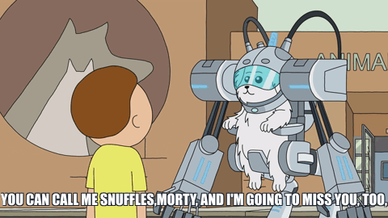

About the series

Rick is an eccentric and alcoholic mad scientist, who eschews many ordinary conventions such as school,
marriage, love, and family. He frequently goes on adventures with his 14-year-old grandson, Morty, a
kind-hearted but easily distressed boy, whose naïve but grounded moral compass plays counterpoint to
Rick's Machiavellian ego. Morty's 17-year-old sister, Summer, is a more conventional teenager who
worries about improving her status among her peers and sometimes follows Rick and Morty on their
adventures. The kids' mother, Beth, is a generally level-headed person and assertive force in
the household, though self-conscious about her professional role as a horse surgeon. She is
dissatisfied with her marriage to Jerry, a simple-minded and insecure person, who disapproves
of Rick's influence over his family.
Rick and Morty has been described as "a never-ending fart joke wrapped around a studied look into nihilism". The series addresses the insignificance of human existence as compared to the size of the universe, with no
recognizable divine presence, as described by Lovecraft's philosophy of cosmicism. The characters of the
show deal with cosmic horror and existential dread, either by asserting the utility of science over magic
or by choosing a life in ignorant bliss. However, as Joachim Heijndermans of Geeks notes, none of
them appear able to handle the absurd and chaotic nature of the universe, as Jerry gets by through
denial, and Rick is a "depressed, substance-addicted, suicidal mess".